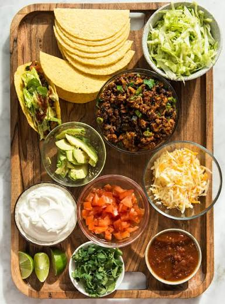

tacos
ingredientes
- tortillas de maiz
- carne
- cebolla
- morron
- lechuga
- queso rallado
- palta
- aceite
- sal y pimienta
- limon
preparacion
- corta los ingredientes:picar el ajo, la cebolla, el tomate, la lechuga y el morron
- cocina la carne:corta la carne en trosos pequeños y onela en una sarten con un poco de aceite
- agrega las verduras:incorpora la cebolla y el morron junto a la carne
- condimenta:agrega sal,pimienta,pimenton y comino a gusto
- calenta las tortilas:ponelas unos segundos en la sarten de ambos aldos
- arma los tacos:coloca la carne en las tortillas y agrega el tomate ,la lechuga
- servi:agrega limon,guacamole o alguna salsa si te gusta

